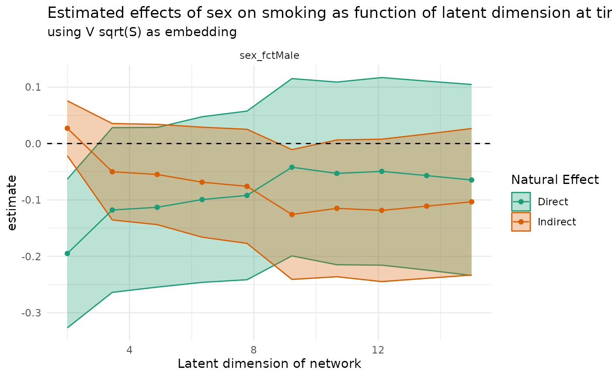

Quick dump of details from Di Maria paper
- cross-sectional analysis for each time point (there are three time points)
- s129 subset
- treatment: sex, money
- outcome: smoke, cannabis, alcohol (binarized measures)
Except for participants’ sex and age, which were recorded at baseline, other variables were collected at three different time occasions. Information on substance use (tobacco, alcohol, cannabis), leisure time activities, music taste, romantic Fig. 2 Steps of the proposed method: starting from a network (a), a latent space model maps it into a space of smaller dimension, a plane in (b). The latent coordinates are then used as mediators (c)
relationships and several others are available. Moreover, social matrices representing friendship relationships among participants are included in the dataset. The subsample of subjects selected for the analysis consists of the 129 students present at all three measurement times. We conducted a cross-sectional analysis for each time point. Our interest lies on the way two exposures, Sex, participant’s gender, and Money, the amount of pocket money each participant had per month, affect substance use through the relationship network. Sex is a binary variable, 0 denotes male and 1 female, Money is a continuous variable ranging from 0 to 40 pounds at the first time, from 0 to 50 pounds at the second time and from 0 to 70 pounds at the third. As it will be explained in the next section, we used the variable as it is, when it plays the role of exposure in the mediation model, and a categorical version obtained through the quartiles of Money at time 3, when it needs to be included in the latent space model as covariate. The categorisation choice is clearly arbitrary, but generates meaningful categories with acceptable ranges. Figure 3 represents the network at time 3, where nodes are coloured according to Sex (a) and categories of Money (b). The social networks representing relationships among students are defined by non-symmetric matrices, since in the data collection phase students were asked to name up to six friends. The lists thus obtained are partially overlapping, but in some cases the relationship of friendship is not reciprocal. Each cell aij can take three values: 0 if subjects i j are not friends, 1 if subject i considers j as a friend and 2 if i considers j as a best friend. We transformed these matrices into adjacency matrices by merging the last two categories and coding them with 1, to simply indicate friendship. The three response variables, Smoke, Cannabis and Alcohol, are measured at each time point and are categorical. Smoke has three categories: 0 indicates nonsmoker, 1 occasional and 2 regular smoker (i.e. more than once a week). Cannabis has four levels: 1-never used, 2-tried once, 3 occasional and 4 regular user. Finally, Fig. 3 Graphical representation of the social network at time 3 with nodes coloured according to Sex and categories of Money: on the left panel (a), = male and = female, on the right panel (b) = 1 (0–7£), = 2 (7–12£), = 3 (12–20£), = 4 (20–70£) 123 Networks as mediating variables: a Bayesian..
Alcohol is a five-category variable coded as follows: 1 non user, 2 once or twice a year, 3 once a month, 4 once a week and 5 more than once a week. This variable presents some missing values: we excluded subjects lacking two or three values and, for subjects presenting only a missing, we imputed it on the basis of the other two collected. This led to the exclusion of 12 students. We converted all variables into binary ones by appropriately merging categories: 2 and 3 for Smoke, to distinguish between smokers (occasional and regular) and non smokers, 1–2 versus 3–4 for Cannabis and 1–2 versus 3–4–5 for Alcohol, respectively, to denote no or sporadic consumption versus regular consumption. In fact, nothing would have prevented us from using categorical responses. However, this would have entailed fitting multinomial models and deriving expressions for the indirect effect involving more complex derivatives. For the sake of simplicity, and to make our application easier to understand, we preferred to convert response variables into binary and to estimate logistic models.
Quick data visualization (time point 1 only)
library(netmediate)
library(tidygraph)
#>
#> Attaching package: 'tidygraph'
#> The following object is masked from 'package:stats':
#>
#> filter
data(glasgow, package = "netmediate")
glasgow1 <- glasgow[[1]] |>
activate(nodes) |>
filter(selection129) |>
mutate(
smokes_dimaria = as.numeric(tobacco_int > 1),
drinks_dimaria = as.numeric(alcohol_int > 2),
weed_dimaria = as.numeric(cannabis_int > 2)
) |>
activate(edges) |>
filter(friendship != "Structurally missing") |>
activate(nodes)
glasgow2 <- glasgow[[2]] |>
activate(nodes) |>
filter(selection129) |>
mutate(
smokes_dimaria = as.numeric(tobacco_int > 1),
drinks_dimaria = as.numeric(alcohol_int > 2),
weed_dimaria = as.numeric(cannabis_int > 2)
) |>
activate(edges) |>
filter(friendship != "Structurally missing") |>
activate(nodes)
glasgow3 <- glasgow[[3]] |>
activate(nodes) |>
filter(selection129) |>
mutate(
smokes_dimaria = as.numeric(tobacco_int > 1),
drinks_dimaria = as.numeric(alcohol_int > 2),
weed_dimaria = as.numeric(cannabis_int > 2)
) |>
activate(edges) |>
filter(friendship != "Structurally missing") |>
activate(nodes)
glasgow1
#> # A tbl_graph: 129 nodes and 449 edges
#> #
#> # A directed multigraph with 4 components
#> #
#> # Node Data: 129 × 50 (active)
#> name age select… select… sex_fct smokin… parent… siblin… alcoho… tobacc…
#> <chr> <dbl> <lgl> <lgl> <fct> <fct> <fct> <fct> <int> <int>
#> 1 s001 13.3 TRUE TRUE female no no no 3 2
#> 2 s002 13.3 TRUE FALSE male no no no NA 1
#> 3 s003 13.7 TRUE TRUE female yes yes no 2 3
#> 4 s004 12.9 TRUE FALSE male no no no 2 1
#> 5 s005 13.6 TRUE FALSE male no no no 2 1
#> 6 s006 13.8 TRUE FALSE male yes no yes 3 3
#> # … with 123 more rows, and 40 more variables: cannabis_int <int>,
#> # alcohol_fct <ord>, tobacco_fct <fct>, cannabis_fct <fct>, money <dbl>,
#> # romantic <fct>, leisure_music_at_home <chr>, leisure_shopping <chr>,
#> # leisure_reading <chr>, leisure_watch_sports <chr>,
#> # leisure_play_sports <chr>, leisure_hang_streets <chr>,
#> # leisure_videogames <chr>, leisure_hobby <chr>, leisure_organized <chr>,
#> # leisure_movies <chr>, leisure_concerts <chr>, leisure_church <chr>,
#> # leisure_pet <chr>, leisure_dancing <chr>, leisure_be_bored <chr>,
#> # music_rock <chr>, music_chart <chr>, music_reggae <chr>, music_dance <chr>,
#> # music_heavy <chr>, music_techno <chr>, music_folk <chr>, music_rave <chr>,
#> # music_indie <chr>, music_jazz <chr>, music_classical <chr>,
#> # music_sixty <chr>, music_house <chr>, music_grunge <chr>, music_rap <chr>,
#> # music_hiphop <chr>, smokes_dimaria <dbl>, drinks_dimaria <dbl>,
#> # weed_dimaria <dbl>
#> #
#> # Edge Data: 449 × 3
#> from to friendship
#> <int> <int> <chr>
#> 1 1 23 Friend
#> 2 1 26 Best friend
#> 3 2 30 Friend
#> # … with 446 more rows
library(ggraph)
#> Loading required package: ggplot2
set.seed(27)
layout <- glasgow1 |>
mutate(
in_degree = centrality_degree(mode = "in")
) |>
create_layout(layout = 'stress')
layout |>
ggraph() +
geom_edge_fan(
arrow = arrow(length = unit(1, 'mm')),
end_cap = circle(2.5, 'mm')
) +
geom_node_point(aes(size = in_degree)) +
labs(
title = "Friendships in a secondary school in Glasgow",
subtitle = "s129 dataset from the Teenage Friends and Lifestyle Study, 1995",
caption = "Each node represents one student",
size = "Popularity (in-degree)"
) +
theme_graph()
#> Warning: Using the `size` aesthetic in this geom was deprecated in ggplot2 3.4.0.
#> ℹ Please use `linewidth` in the `default_aes` field and elsewhere instead.
layout |>
ggraph() +
geom_edge_fan(
arrow = arrow(length = unit(1, 'mm')),
end_cap = circle(2.5, 'mm')
) +
geom_node_point(aes(color = money, size = in_degree)) +
labs(
title = "Spending money in a secondary school in Glasgow",
subtitle = "s129 dataset from the Teenage Friends and Lifestyle Study, 1995",
caption = "Each node represents one student",
size = "Popularity (in-degree)",
color = "Weekly spending money"
) +
theme_graph()
layout |>
ggraph() +
geom_edge_fan(
arrow = arrow(length = unit(1, 'mm')),
end_cap = circle(2.5, 'mm')
) +
geom_node_point(aes(color = tobacco_fct, size = in_degree)) +
labs(
title = "Tobacco use in a secondary school in Glasgow",
subtitle = "s129 dataset from the Teenage Friends and Lifestyle Study, 1995",
caption = "Each node represents one student",
size = "Popularity (in-degree)",
color = "Tobacco usage"
) +
theme_graph()Embeddings and some diagnostics
Looks like 4-5 latent dimensions are sufficient per Karl’s diagnostic, perhaps all the way to 10
library(gdim)
#> Loading required package: Matrix
A1 <- igraph::as_adj(glasgow1)
cv_eigs <- eigcv(A1, k_max = 50)
cv_eigs
#> Estimated graph dimension: 0
#>
#> Number of bootstraps: 10
#> Edge splitting probabaility: 0.1
#> Significance level: 0.05
#>
#> ------------ Summary of Tests ------------
#> k z pvals padj
#> 1 1.61135981 0.053550661 0.053550661
#> 2 2.39981568 0.008201665 0.008201665
#> 3 1.70615708 0.043989418 0.043989418
#> 4 0.91198386 0.180888606 0.180888606
#> 5 1.66321115 0.048135088 0.048135088
#> 6 1.50960612 0.065571979 0.065571979
#> 7 0.67515874 0.249787457 0.249787457
#> 8 1.17736036 0.119525852 0.119525852
#> 9 1.44636314 0.074037687 0.074037687
#> 10 0.45000384 0.326353835 0.326353835
#> 11 -0.02632028 0.510499062 0.510499062
#> 12 0.00571659 0.497719423 0.497719423
#> 13 0.31424832 0.376666223 0.376666223
#> 14 -0.08212542 0.532726509 0.532726509
#> 15 -0.25413369 0.600303860 0.600303860
#> 16 -0.64060377 0.739109925 0.739109925
#> 17 0.06003967 0.476062020 0.476062020
#> 18 -0.39549319 0.653760526 0.653760526
#> 19 -0.18141921 0.571980730 0.571980730
#> 20 -0.32151324 0.626089260 0.626089260
#> 21 -0.63500251 0.737286610 0.737286610
#> 22 -0.97866639 0.836127579 0.836127579
#> 23 -0.78138905 0.782713144 0.782713144
#> 24 -1.05247120 0.853708291 0.853708291
#> 25 -0.87448609 0.809073205 0.809073205
#> 26 -0.80266735 0.788916487 0.788916487
#> 27 -1.23385029 0.891370652 0.891370652
#> 28 -1.22613565 0.889926184 0.889926184
#> 29 -0.97238655 0.834570861 0.834570861
#> 30 -1.15947131 0.876867938 0.876867938
#> 31 -1.19830958 0.884601741 0.884601741
#> 32 -1.15439618 0.875831109 0.875831109
#> 33 -0.95884745 0.831182200 0.831182200
#> 34 -1.03707194 0.850148835 0.850148835
#> 35 -0.79591493 0.786959259 0.786959259
#> 36 -0.67077626 0.748818463 0.748818463
#> 37 -1.16312193 0.877609983 0.877609983
#> 38 -0.42087875 0.663078189 0.663078189
#> 39 -0.63474385 0.737202256 0.737202256
#> 40 -0.62677948 0.734598101 0.734598101
#> 41 -0.39539876 0.653725690 0.653725690
#> 42 -0.71953871 0.764095469 0.764095469
#> 43 -0.71576383 0.762931404 0.762931404
#> 44 -0.42584870 0.664890950 0.664890950
#> 45 -0.67151549 0.749053902 0.749053902
#> 46 -0.42327195 0.663951573 0.663951573
#> 47 -0.22170766 0.587729265 0.587729265
#> 48 -0.38215153 0.648825514 0.648825514
#> 49 -0.61514782 0.730771449 0.730771449
#> 50 -0.66429326 0.746748682 0.746748682Now we look at varimax embeddings to sanity check them
library(vsp)
fa1 <- vsp(A1, rank = 9, degree_normalize = FALSE)
fa1
#> Vintage Sparse PCA Factor Analysis
#>
#> Rows (n): 129
#> Cols (d): 129
#> Factors (rank): 9
#> Lambda[rank]: 3.5596
#> Components
#>
#> Z: 129 x 9 [dgeMatrix]
#> B: 9 x 9 [dgeMatrix]
#> Y: 129 x 9 [dgeMatrix]
#> u: 129 x 9 [matrix]
#> d: 9 [numeric]
#> v: 129 x 9 [matrix]
plot_mixing_matrix(fa1)
screeplot(fa1)
plot_ipr_pairs(fa1)
The varimax factors look decently clear in the plots below
library(vsp)
fa1 %>%
get_varimax_y(1:9) %>%
dplyr::select(-id) %>%
GGally::ggpairs(ggplot2::aes(alpha = 0.001), progress = FALSE) +
ggplot2::theme_minimal()
#> Registered S3 method overwritten by 'GGally':
#> method from
#> +.gg ggplot2Causal estimates
First we use the left embedding (\(US^{1/2}\)) and get
u_curve <- sensitivity_curve(glasgow1, smokes_dimaria ~ sex_fct, max_rank = 15)
plot(u_curve) +
geom_hline(yintercept = 0, linetype = "dashed") +
theme_minimal() +
labs(
title = "Estimated effects of sex on smoking as function of latent dimension at time 1",
subtitle = "using U sqrt(S) as embedding"
)Then we use the right embedding (\(V S^{1/2}\), personally these factors seem most compelling to me) and get
v_curve <- sensitivity_curve(glasgow1, smokes_dimaria ~ sex_fct, max_rank = 15, coembedding = "V")
plot(v_curve) +
geom_hline(yintercept = 0, linetype = "dashed") +
theme_minimal() +
labs(
title = "Estimated effects of sex on smoking as function of latent dimension at time 1",
subtitle = "using V sqrt(S) as embedding"
)
The TL;DR is basically that all reasonable confidence intervals for the direct and indirect effects include zero. This makes sense, since the ATE is barely inconsistent with a null effect itself.
Estimates using symmetrized network
glasgow1_sym <- glasgow1 |>
igraph::as.undirected() |>
as_tbl_graph()
v_curve_sym <- sensitivity_curve(
glasgow1_sym,
smokes_dimaria ~ sex_fct,
max_rank = 15
)
plot(v_curve_sym) +
geom_hline(yintercept = 0, linetype = "dashed") +
theme_minimal() +
labs(
title = "Estimated effects of sex on smoking as function of latent dimension at time 1",
subtitle = "Using embeddings from symmetrized adjacency matrix"
)Estimates using regularized (directed) graph Laplacian
library(invertiforms)
#>
#> Attaching package: 'invertiforms'
#> The following object is masked from 'package:base':
#>
#> transform
iform <- RegularizedLaplacian(A1)
L_okc <- transform(iform, A1)
max_rank <- 15
s_max <- RSpectra::svds(L_okc, max_rank, max_rank)
X_max <- s_max$v %*% diag(sqrt(s_max$d)) # use right embeddings here
# and now we plug them into the product-of-coefs estimator
curve_custom <- sensitivity_curve_custom(
glasgow1_sym,
smokes_dimaria ~ sex_fct,
X_max
)
plot(curve_custom) +
geom_hline(yintercept = 0, linetype = "dashed") +
theme_minimal() +
labs(
title = "Estimated effects of sex on smoking as function of latent dimension at time 1",
subtitle = "Using embeddings from regularized graph Laplacian"
)Other analyses
Sex on smoking at time 2
glasgow2 |>
sensitivity_curve(smokes_dimaria ~ sex_fct, max_rank = 15, coembedding = "V") |>
plot() +
geom_hline(yintercept = 0, linetype = "dashed") +
theme_minimal() +
labs(
title = "Estimated effects of sex on smoking as function of latent dimension at time 2",
subtitle = "using V sqrt(S) as embedding"
)
Sex on smoking at time 3
glasgow3 |>
sensitivity_curve(smokes_dimaria ~ sex_fct, max_rank = 15, coembedding = "V") |>
plot() +
geom_hline(yintercept = 0, linetype = "dashed") +
theme_minimal() +
labs(
title = "Estimated effects of sex on smoking as function of latent dimension at time 3",
subtitle = "using V sqrt(S) as embedding"
)Wealth on smoking at time 1
glasgow1 |>
sensitivity_curve(smokes_dimaria ~ money, max_rank = 15, coembedding = "V") |>
plot() +
geom_hline(yintercept = 0, linetype = "dashed") +
theme_minimal() +
labs(
title = "Estimated effects of spending money on smoking as function of latent dimension at time 1",
subtitle = "using V sqrt(S) as embedding"
)Wealth on smoking at time 2
glasgow2 |>
sensitivity_curve(smokes_dimaria ~ money, max_rank = 15, coembedding = "V") |>
plot() +
geom_hline(yintercept = 0, linetype = "dashed") +
theme_minimal() +
labs(
title = "Estimated effects of spending money on smoking as function of latent dimension at time 2",
subtitle = "using V sqrt(S) as embedding"
)Wealth on smoking at time 3
glasgow3 |>
sensitivity_curve(smokes_dimaria ~ money, max_rank = 15, coembedding = "V") |>
plot() +
geom_hline(yintercept = 0, linetype = "dashed") +
theme_minimal() +
labs(
title = "Estimated effects of spending money on smoking as function of latent dimension at time 3",
subtitle = "using V sqrt(S) as embedding"
)